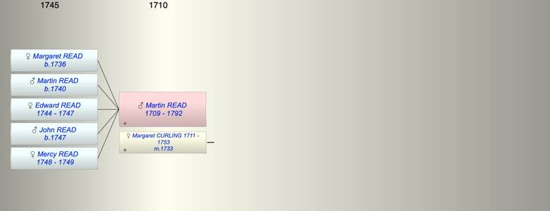

| [Index] |
| Martin READ (1709 - 1792) |
|  |
| b. 1709 |
| m. 18 Feb 1733 Margaret CURLING (1711 - 1753) at Woodnesborough |
| d. 21 Dec 1792 at St Laurence aged 83 |
| Children (5): |
| Margaret READ (1736 - ) |
| Martin READ (1740 - ) |
| Edward READ (1744 - 1747) |
| John READ (1747 - ) |
| Mercy READ (1748 - 1749) |
| Events in Martin READ (1709 - 1792)'s life | |||||
| Date | Age | Event | Place | Notes | Src |
| 1709 | Martin READ was born | ||||
| 18 Feb 1733 | 24 | Married Margaret CURLING (aged 22) | Woodnesborough | Note 1 | |
| 1736 | 27 | Birth of daughter Margaret READ | St Laurence | Note 2 | |
| 1740 | 31 | Birth of son Martin READ | St Laurence | Note 3 | |
| 1744 | 35 | Birth of daughter Edward READ | St Laurence | Note 4 | |
| 1747 | 38 | Birth of son John READ | St Laurence | Note 5 | |
| 1747 | 38 | Death of daughter Edward READ (aged 3) | St Laurence | Note 6 | |
| 1748 | 39 | Birth of daughter Mercy READ | St Laurence | Note 7 | |
| 1749 | 40 | Death of daughter Mercy READ (aged 1) | St Laurence | Note 8 | |
| 16 Dec 1753 | 44 | Death of wife Margaret CURLING (aged 42) | St Laurence | Note 9 | |
| 21 Dec 1792 | 83 | Martin READ died | St Laurence | aged 83 ex MI | |
| Created on a Mac™ using iFamily for Mac™ on 8 Oct 2023 |